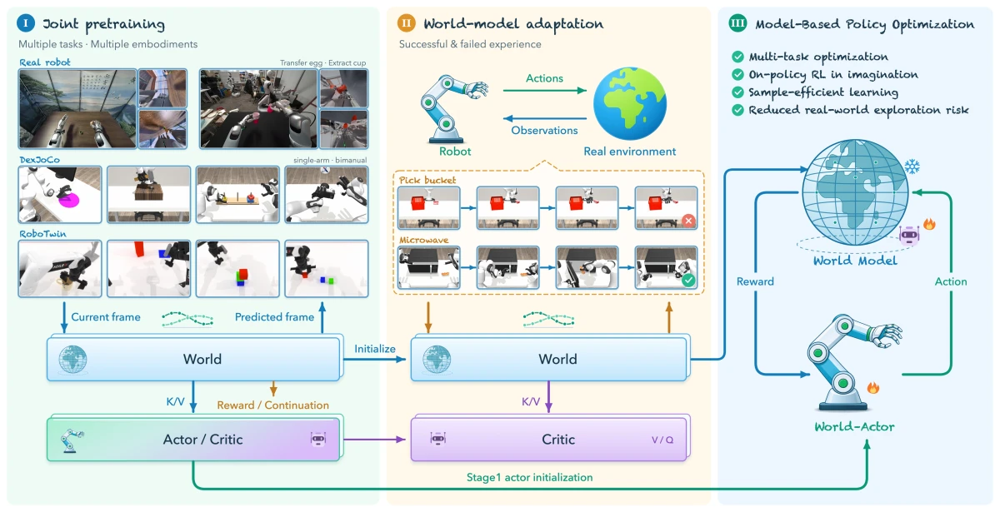
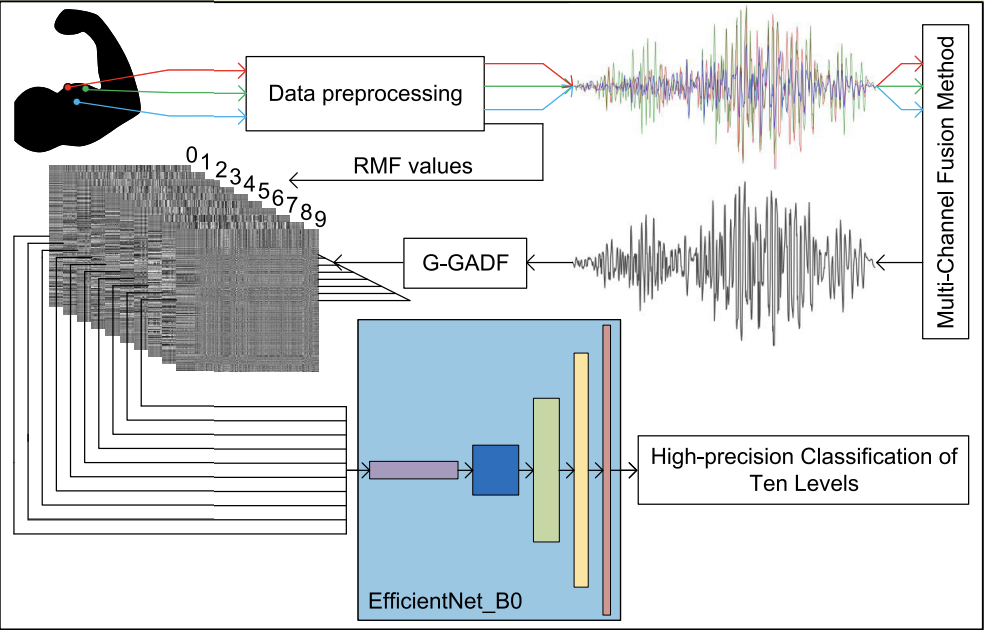
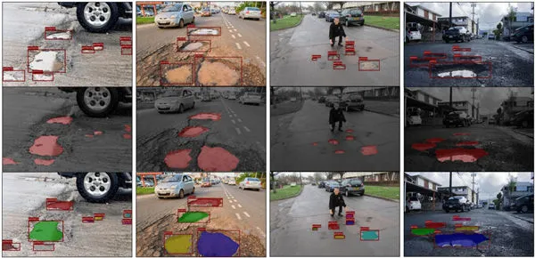

Dacheng Zhou
I am currently a Research Intern at Galbot and a Research Student at EPFL CREATE Lab, advised by Prof. Josie Hughes. I am pursuing my M.S. degree in Robotics at Aalto University.
Previously, I received my B.Eng. degree in Automation from Tongji University in June 2024, where I was fortunate to be supervised by Prof. Rui Fan.
If you are interested in connecting with me, please feel free to reach out.
Email / Scholar / GitHub / LinkedIn / ResearchGate / ORCID / WeChat / Xiaohongshu


Research
My research interests lie in robot tactile sensing and dexterous manipulation, especially learning contact-rich manipulation skills from tactile feedback, sEMG signals, and physics-based simulation.

Hongjia Liu*, Dacheng Zhou*, Minghao Fu, Chuanjun Guo, Tianze Wang, Qingtao Liu, He Wang, Li Yi
arXiv preprint, 2026
arXiv
*Equal contribution

Yu Liu, Jian Zhou, Dacheng Zhou, Linna Peng
IEEE Sensors Journal, 2024
paper

Sicen Guo, Jiahang Li, Yi Feng, Dacheng Zhou, Denghuang Zhang, Chen Chen, Shuai Su, Xingyi Zhu, Qijun Chen, Rui Fan
IEEE Transactions on Intelligent Transportation Systems (T-ITS), 2024
paper / project page
Experience
Honors and Awards
- 2024, 2025, 2026: Finland National Scholarship (Full Funding and Highest Scholarship, by Finland Ministry of Education and Culture)
- 2021, 2022, 2023: Outstanding Undergraduate Scholarship (3 consecutive years)
- 2022: Provincial Prize, China Undergraduate Mathematical Contest in Modeling (CUMCM)
- 2018, 2019: Provincial Prize, Chinese Chemistry Olympiad (CChO)
Academic Service
- Conference Reviewer: ICRA, IROS, CASE
- Journal Reviewer: RA-L
Invited Talks
- 2025.11 — Guest speaker at “AI + Metaphysics Startup Closed-Door Forum”, held by Next by NEXT.
Miscellaneous
My favorite game is GeoGuessr. My favorite singer is Cheer Chen. I enjoy a wide range of sports, including hiking, soccer, rock climbing, and squash.